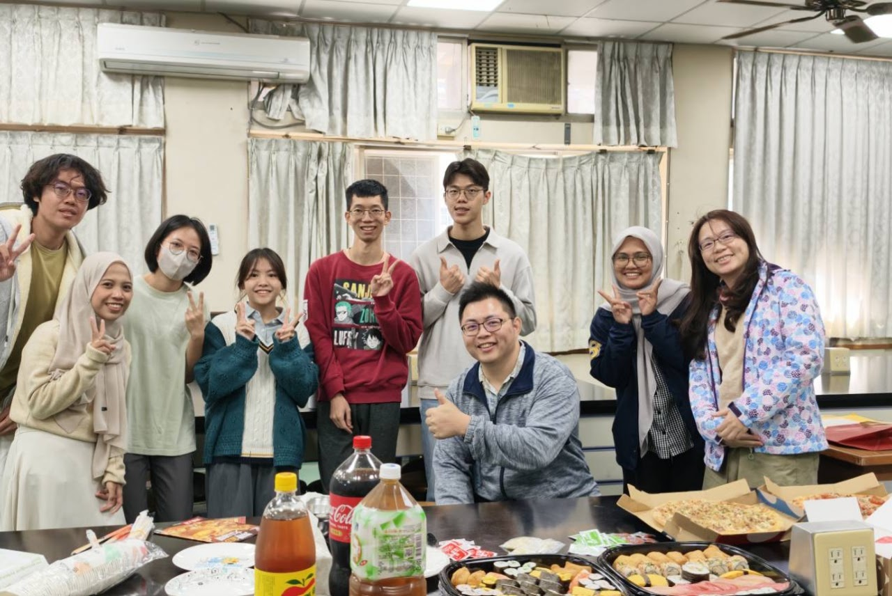

2026.02.11
IPB University 交換學生來訪
Exchange students from IPB University
歡迎 Asiyah Wardah 與 Nurul Hikma 來到 TraitMap Lab 交流，與實驗室成員分享研究與學習經驗。
Welcoming Asiyah Wardah and Nurul Hikma from IPB University for exchange and conversation with TraitMap Lab members.